spark-submit: choosing where the PySpark driver starts
Component index · Next: YARN submission client
For a classic PySpark batch script, spark-submit decides which JVM entry point runs first and what arguments it gets. It runs on the submit host. In cluster mode that JVM submits the application; in client mode it also hosts the JVM side of the driver. spark-submit does not choose a worker, launch a YARN container, or assign a task.
Flow at a glance
- Submit wrapper: Passes the command line to SparkSubmit.
- SparkSubmit: Selects PythonRunner for a client-mode Python script.
- PythonRunner: Starts the Python driver on the submit host.
Key distinction: In cluster mode the submit JVM runs the YARN submission client instead. The AM starts Python later.
Show the animated flow

From command line to JVM call
| Boundary |
Input and output |
| Caller to launcher |
The bin/spark-submit wrapper passes the argument vector to spark-class for org.apache.spark.deploy.SparkSubmit. doSubmit parses it and dispatches the SUBMIT action. --master yarn selects a cluster manager, not a ResourceManager hostname. --deploy-mode selects the driver's placement; its default is client. |
| Parser to environment preparation |
SparkSubmitArguments owns the primary resource URI, isPython, application arguments, and Spark properties for this invocation. The first non-option resource ends Spark option parsing: --executor-memory 4g after orders.py is an argument to the script. --conf values take precedence over properties-file entries; explicit options such as --executor-memory are filled from properties or environment only if missing. Parsing and defaults · argument boundary |
| Environment preparation to dispatcher |
prepareSubmitEnvironment returns (childArgs, childClasspath, sparkConf, childMainClass). For YARN it maps --num-executors to spark.executor.instances, --py-files to spark.yarn.dist.pyFiles, and marks Python submissions with spark.yarn.isPython=true. These are inputs for later components, not requests already sent to YARN. Mode selection · option mapping · Python dispatch |
| Dispatcher to selected class |
runMain installs the classpath and invokes SparkApplication.start or wraps a static main with JavaMainApplication. Thus child main class means a call inside the submit JVM, not a second JVM. PythonRunner, when invoked, really does create a Python subprocess. Dispatcher · static-main adapter · Python process |
Trace one command in both modes
Suppose orders.py accepts a processing date:
spark-submit --master yarn --deploy-mode cluster --num-executors 3 --conf spark.dynamicAllocation.enabled=false --py-files rules.zip orders.py 2026-04-30
- The submit JVM recognizes the
.py primary resource; 2026-04-30 is application data. It resolves file references. A remote URI whose scheme Hadoop cannot handle, or which spark.yarn.dist.forceDownloadSchemes selects, can be downloaded to the submit host first. That is neither upload to shared storage nor localization into a container. Download decision
- Cluster: the first class is
YarnClusterApplication. Its arguments include --primary-py-file <orders.py URI> --class org.apache.spark.deploy.PythonRunner --arg 2026-04-30. The wrapper constructs the YARN client; no user Python process is needed on the submit host. The selected node later starts the ApplicationMaster, which invokes PythonRunner with the localized script. Cluster argument construction · wrapper handoff
- Client, changing only
--deploy-mode: the first class is PythonRunner itself. It receives the local script path, local Python dependencies, then the date; it starts a Py4J gateway and the Python process on the submit host. When the script initializes its classic Spark context, YarnClientSchedulerBackend.start submits the YARN application with --arg <driverHost>:<driverPort>. Here the driver exists before the AM. Client arguments · Python gateway and process · backend submission
Flowchart · Open full sizeText equivalent
flowchart LR
S["SparkSubmit on submit host"] -->|cluster| Y["YarnClusterApplication"]
Y --> C["Submit YARN application"]
C --> A["AM on allocated node"]
A --> P["PythonRunner starts orders.py there"]
S -->|client| R["PythonRunner starts orders.py here"]
R --> D["SparkContext starts YARN backend"]
D --> E["Submit YARN application with driver address"]Interpreting exit and failure
If the options are invalid, HADOOP_CONF_DIR and YARN_CONF_DIR are both missing, or Spark cannot load its YARN classes, look at the submit process, not executor logs. --verbose shows the selected main class, arguments, classpath, and redacted Spark configuration. It can distinguish the wrong deploy mode from a later failure to stage or run the script. Validation · YARN class check · verbose output
In ordinary cluster submission the client monitors the application. With spark.yarn.submit.waitAppCompletion=false and no connected launcher backend, it checks one report and can exit before the job finishes; a zero shell exit is then not proof of successful output. In client mode the submit host must remain alive: PythonRunner waits for Python, propagates its nonzero exit, and shuts down the gateway. YARN cannot restart that external driver. Cluster wait policy · Python exit handling